Free
powerpoint
Tutorials
|
Free
powerpoint
Tutorials
|
|
 home home |
Stay at Home and Learn | ||||
Use a Hyperlink to Display a Web Page |
|||||
|
By now, you should have three slides. This first one is a Title for the presentation, and the other two should look exactly the same, except for the Title at the top. On the third slide, we'll add a graphic. The graphic will display a web page when clicked. To add the graphic, we can use the clip art built in to PowerPoint. So, from the menu bar at the top, click Insert. From the Insert menu, select Picture > Clip Art: 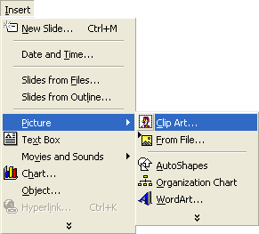 When you click on Clip Art, you'll get the following dialogue box popping up in PowerPoint 2000: 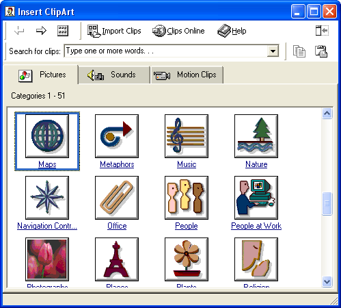 Scroll down to the Maps category, and click on it. You will be taken to a new area: 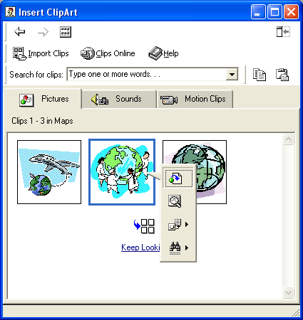 The globe image we chose was the middle one. Click on this and you'll see the menu appear. Click the first icon on the menu to insert the clip art onto your slide. Close the Insert Clip Art dialogue box by clicking the red X in the top right corner. For PowerPoint 2003, you'll see some search option in the Task Pane on the right hand side of your screen. Just click the Search button: 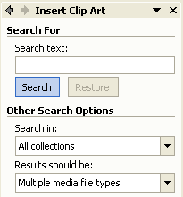 When you do, all the clip art will appear. You won't have the globe, but scroll down until you find one that takes your fancy. We chose the computer, in the image below: 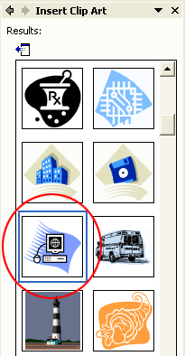 Your slide should now look like this: If your image is too small (or too big), use the white squares or circles to resize it (hold down your left mouse button on a square or circle and drag). To turn the clip art into a hyperlink, right click on the selected image. You'll see a context menu appear: 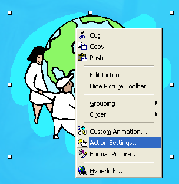 Select Action Settings from the menu, and you'll see Action Settings dialogue box appear again: 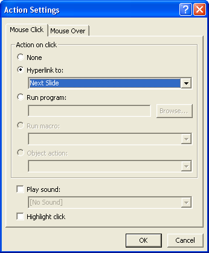 Select the Hyperlink to option, and the dropdown box will become available. From the dropdown box, select URL: 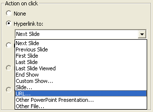 As soon as you click on URL, you'll get a dialogue box popping up. The dialogue box is expecting a web link. Enter the following (or type an address of your own): http://www.homeandlearn.co.uk 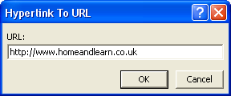 Click OK, and the Action Settings dialogue box will look like this: 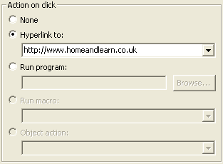 You can have some effects for your hyperlinks. We'll add a sound when the mouse is over the link, and highlight the image. So click the Mouse Over tab at the top of the Action Settings dialogue box: 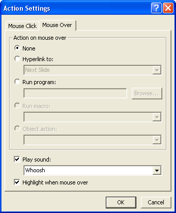 Put a tick in the box at the bottom Play Sound. Then select a sound from the dropdown list. We went for Whoosh. Put a tick in the box for Highlight when mouse over. Now click the OK button. When you are returned to PowerPoint, you won't see any changes. But
press F5 on your keyboard to start the presentation, and then navigate
to your third slide. When the mouse is over the globe, it should highlight.
You'll also hear your chosen sound. Click on the globe and, if you have
a connection to the internet, your browser should start up and display
the web page you entered in the URL dialogue box.
|
||||